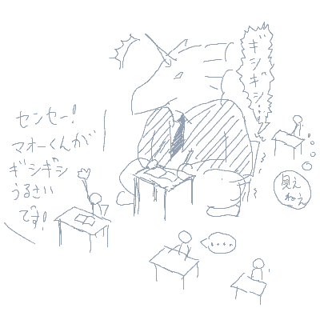

シルバーセカンド開発日誌
■
2008-06-07 (土) 魔王とか変態とか多すぎ▼
＞真魔王が学生として馴染んでいるギャップを見て楽しみたいでござる。

デカいくせして前の席で授業を受けたがる魔王さんとか、
これは想像が止まりません。
野球部に入ったら、ストライクゾーンは広すぎるし球は小さいし
タッチアウトされまくりだしで、きっと泣きそうです。
バスケ部入ったら最強でしょうけどね、飛べるし。
それなのに、魔王君の入った部活が
結局茶道部だったとかそんなカオスが！？
育成ゲーム話第二弾！といってもシル学FAEなのですが、
ちょびっとずつ進行中です。WHは半年前の話なもんで。
とりあえずメアリーの好感度を必死に上げようとして
カフェ通いの日々なのですが、マイアさんがいなくて
メアリーさんだけしかいない日のルーチンが未だによく分かりません。
でもロードしたら次の日いる人は同じだしで、
なかなか読みにくいのが難しいですね！
（うっかりマイアさんがいるとき or 二人が一緒にいるときに
ベーカリーに行くと、両方の好感度が上がってしまうので避けたい）
ひょっとするとバイトのコマンドだと
曜日で固定だったりするのでしょうか。
こういう要素も、プレイ中の一つの考え所になりますね！
で気になったので、他のゲームだと
その辺りどうなっているのか調べてみたところ、
ときメモでは、曜日によって
ヒロインキャラの部活やバイトの日が決まってるようです。
でもこれが活かされるのは、
爆弾（傷心状態、放置してると他キャラの好感度減）が
ついてしまったキャラに対して、わざとそのキャラの用事がある日に
デートに誘い（当然断られる）、
その爆弾を解除するというテクニックでしか
使われていないらしいのが何だかひどいテクニックだ！
（電話でデートに誘うだけで、可否に関わらず爆弾が消える。
デートすると二週間消費するので、
誘うだけで爆弾が消えるのはお得、という意味）
こんな生活習慣のアレコレも、うまく使えばゲーム的に
面白そうなネタにできるかもしれません。
こういうことに気付けるから、たまにゲームやってみると面白いです。
以下は気になる拍手コメントなど。
というか開発者の方から正式版のご連絡が来てました、
わざわざありがとうございます！ ▼追記を開く▼＞シル学FAEを同盟二次ゲームコーナーにリンクだけでも
＞置いていただけませんか？
むしろこちらから紹介させてくださいという勢いなので、
紹介に関しての詳しいご連絡をメールで送付させていただきました。
ひょっとしたらスパムに埋もれているかもしれないので、
6/4 00:14頃着のsilversecond.netドメインからの
メールをご確認下さい！
＞ウィズハはファンの間でも声無しプレイが多いですよ
一個前に書いたウィザーズハーモニーのボイスは
だいぶ有名だったようで、ホッとしています。
でも今聞いてみると意外と普通に聞こえますね。
覚悟無しにいきなり聞いたから
ダメージが大きかっただけかもしれません。
あまりにひどいのを期待している人にはガッカリだと思います↓
※ニコニコ動画より 10分くらいまで見ればおおよそ全体を把握できます
全部見て気付きましたが、あなたは神を信じまーすかー？系の
天然系女の子を入れて遊んでいたのがきつかったようです。■
2008-05-27 (火) 絶賛企画中！（色々と）▼
新キャラボツボツ考え中。
↑を見ればもう分かりますが、シル見リニューアルでは、
イマイチ空気だった某クラスメイトさんがいなくなる代わりに
新しい人が入る予定です。
星の妖精は星の妖精でテストの邪魔しに来るんでしょう、たぶん。
登場キャラの中にはツンツンしてる人が
少ないので、今後増やす予定です。
とうとうモノリスフィア新バージョンがVectorにアップ！
それに続いてモノリスフィアのアンケートも開始しました。
で、今回はそのアンケートについての小話です！
アンケート結果の中で、いつも特に気にしているのは
実は「平均年齢」だったりします。
これがサイトの年齢と連動して毎年1年ずつ増加してると、
サイトのゆるやかな死に繋がってきます。
古参ファンの方々だけだといつか消えてしまうのは世の常で、
どこの業界もヴァンパイアの如く、
いつも若い血が欲しいものなのです。
例えばSF小説ファンの方々にいたっては、
平均年齢が毎年1歳ずつ増加しているらしいので、
「平均年齢が毎年+1歳ならSFファンは不死身じゃないか！」
などというジョークが飛び交っているというウワサですが、
現実問題としては、かなりアウトです。
個人的には、SFのセンスオブワンダーな
ぶっ飛びっぷりが大好きなのですが、
SF小説業界そのものも、連載作品の最新刊が10年以上出てないとか
別の意味でセンスオブワンダーな世界だったりします。
え？シル見もあんまり変わらない？
で、話は戻りますが、現状では平均年齢が
「18.8歳」辺りになりそうなので、ひとまず安心しています。
幻想譚とシルエットノートでは「平均18.6歳」だったので、
経年と比較すると、ひとまずは毎年新しいユーザーさんが
流入しているようです。ようこそ、SilverSecondへ！
もちろんこの統計の裏には、
「お年を召した社会人の方々は時間がなくてアンケートに答えられない」
という事情もあるのでしょうけれど、条件そのものは
昔から変わっていないので、恐らくずっと同条件の統計だと思います。
小学生未満の方もおられましたが、将来が楽しみですね！！
追記は拍手コメントなど。
シルフェイド学院物語FAEも遊ばせていただきました！
＞ウルフさんはもう遊びましたか？
最初のβ版をちょっと遊ばせていただきました、
これはとても期待できそうです！
これが初作品ゲームだとしたらかなり凄いデキではないでしょうか！？
二次創作ゲームでフルプログラムとか無茶しやがって…！
と思いましたがすばらしい！
自分もシル学院を作る際に発想の種になりそうな要素満載なので、
色々参考にさせていただこうと思います。
特に、イベントがテキスト読み込みだけで再生できる点は要注目！
この辺り、こちらももうちょっと上手く作りたいと思って考え中です。
対抗意識燃やしてメラメラ頑張っていきたいと思います！
本家版は、シルノ設定をやや踏襲した未来物になりそうです。
言い方は悪いですが、FAE版をたっぷり参考にさせていただく勢いで
面白いものを作りたいと思います。ゲーム性も重視！
もし本家版シル学院に要望その他がございましたら、
ぜひ拍手コメントでご意見等送ってくださいませ。
今はウディタ修正やら何やらでアヒアヒ言ってますが！
いつ終わるんだー！
＞みんなのアイドルシーナさんの3サイズを教えて下さい。
あばらが浮いてる17歳美少女、
シーナ・セフライトをよろしくお願いします。
3サイズ聞いて嬉しいのってマイアさんとかセロリー先生とか
その辺りだけじゃないでしょうか。
あれ？セロリーじゃなかった気がしますね。セルロイド先生？
いやーよく覚えてないなあハッハッハ。
そういえばマイアさんといえば、予告のお姉さんには最初
サウラさんという名前を付けようとしてたことが思い出されます。
「マイアサウラ」という恐竜ネームを
分解して使おうとしてたんですね、
今はマイアさんしか残ってませんが。
マイアサウラって中国名で「慈母龍」って
書くんですって、格好良すぎる。■
2008-05-21 (水) 新しいことをやりたい▼「人間界の空気は汚くて、私たちもう生きていけない」
などと、もうすぐ妖精さんになれそうなセリフを吐いてるウルフです。
晴れの日に外に出るとすぐクシャミが止まらなくなります、
おかげで作業がはかどらないぃぃぃンガァァァ！
1立方mあたり30個の花粉でも超反応するのかこの体は！
そんな中でもぼつぼつ絵のリメイクは行っています。

シーナ、あんまり変わってません。
顔グラフィックは、元からそれなりだったのはいいんですが、
どう見ても崩れてる人も多いので
そっちの美容整形を特に頑張ってます。
それにしても懐かしい！この顔グラ描いたの6～7年前ですよ。
あの頃と比べると何もかも変わりました。
さすがに高校生ばりのたぎる情熱そのままってわけではありませんが、
代わりに経験値がたまったのでやりたい放題！イヤッホウ！
これからも、新しいことバンバンやっていきたい所存です。
以下は気になる拍手コメント。 ▼追記を開く▼
＞ＴＶのＣＭでシルノの曲が使われてたんですが……。
シルエットノートで使用しているのは業務用音楽素材なので、
ＣＭやドラマ、アニメなどで使われることが多いと思います。
＞小粒RPGノベルやってみたいです先生！（＾－＾）ノシ
言ってみたら言ってみたで、やってみたーいという方が続出でした。
頭の隅っこで考えておきます！
＞負担がかかるなら、ウディタの
＞サンプルゲーム作成の有志を募集し、サンプルゲーム修正は
＞その人たちに任せるというのは？
サンプルゲームはもうできてます。その修正が大変ってだけで。
何より、サンプルゲーム（システム）みたいなのを
誰も作りそうになかった＆自分で責任取れた方があとあと楽そうなので、
結局自分で作ったという経緯があります。全部自爆です！
バグの原因を細かく指摘してくださる方も出てきたようなので、
今後の負担も少しは軽くなると思います。ウディタやら新作やら、やることの幅を広げすぎて
何もできなくなってる感があるウルフです。
やることが増えたおかげで、ちょっと負担が大きくなってきたのか、
ネイティブアメリカンな方々の言葉を借りると
「魂が追いついていない」のかもしれません。
やたら焦りばかりが募ります。
やってることはやってると思うんです、
ウディタ修正も頑張ってるつもりですし。
そりゃまあ例えばウディタだって、別にバグ修正を急がずに
後回しにするのも制作者の勝手といえば勝手です。
でも悪い意味でスルーできなくて、やれる仕事を放って
新しいことをするのがどうにも落ち着かない！
悪い癖だなあと思いつつも、その性格はゲーム制作その他で
存分に活かされていますから、一概に悪いとも思っていません。
真の職人だって、自分の作った物には、
必ず責任の限りを尽くすはずですから。
と、何だか愚痴ってしまいましたが、でもとりあえずは、
いつも通り、やれる分だけしっかり頑張ろうと思います。
好き嫌いに関わらず、どんなことでも軽々とこなせるような、
そんな強さも欲しいです。
だからこそ、現状を力強く打破する勢いを持って頑張りたい！
どうせ将来きっと、もっともっと
大変な困難にブチ当たるんでしょうから。
どんなときも、何があっても、へこたれているヒマはありません。
短い寿命を精一杯生きるためにも、
心を全開にして頑張りたいと思います。
あ、でも体に限界来てたら休みますよ！？
血便で真っ赤はもう勘弁。
とりあえず愚痴だけなのもアレなので、ここでお目直し。
その昔、シルフェイド同盟の企画絵BBSに投下したウリユ線画を掲載！

※服はイメージです。
シークレットファイルには書き忘れましたが、
ウリユに「バカには見えない服」を着せようとすると
「え？服着てないよ？」とか言います。
ウリユは作者的にもお気に入りなキャラです。
シークレットファイルでは彼女の記述に心動かされた人も
ちょこちょこいらっしゃったようで。
ただの設定資料集ですが、楽しんでいただけたなら嬉しい限りです。
以下は気になった拍手コメント。 ▼追記を開く▼＞シル見シェアウェアか・・・・安くしてくれぇ(；ω；)
シル見はシェアウェアにしませんって！
シェアウェアになるのは新作のほうです。
＞今週末にランドマスで～
行きます行きます、何でもいいので気分転換が欲しいです。
テレビに夢中になって忘れてたらスミマセン。
16日（土）って書いてありましたが、これ17日ですよねたぶん。
＞WebMoney500円の使い道がないんですが……。
新作は1500円にする予定なのでご安心を！
といいつつも、小粒ゲーム作ろうと宣言したことがあるので
500円ゲーのほうも作るかどうか少し迷ってます。
皆さん、アルバートが主人公の
サウンドノベルとか遊んでみたいですか？
ネタが足りなくてボツったアルバート幻想譚も、
数時間程度のサウンドノベル（RPGノベル？）くらいなら
実現できそうな気もしています。
でも気がしているだけで、実際にやるかどうかは別問題。もう花粉も大丈夫だろうと思ってマスクなしの生活を始めたら
たった数時間でくしゃみがとまらなくなったウルフです。
突然気温が上がったり下がったりしたおかげで
体調も崩してしまったかもしれません、皆さまもお気を付けて。

それはそうと、モノリスフィアは一段落したので
シル見リメイク顔画像作成やら、新作構想を練ったりしています。
少しは絵の練習もしたいし、他に私事でやりたいこともあるので、
しばらくはボチボチ色々やっていこうと思います。
たぶんシル見リメイクじゃない方の次回作は
シェアウェアになると思いますので、お楽しみに。
基本的に、モノリスフィアのような、受け入れられるかどうかが
分からないようなぶっ飛んだ作品はフリーウェアとして、
ある程度の安定した面白さが望める作品は
シェアウェアとして開発していく方針です。
普通のゲームに飽きた方にも、ゲームに不慣れな人にも
どっちにでもおすすめできるゲームの制作を、
今後も続けていきたいと思っています。
でも、だいたい初回公開後に意見を聞いて修正して、
それでようやく完成品になっている感じなので、
皆さまの力あってこその開発だとも思っています。
いつも来てくださっている方々、今後とも
ご意見ご感想の方、どうかよろしくお願いします。
追記は気になったコメントだとか、最近遊んでるゲーム話。 ▼追記を開く▼＞ウルフ先生！飲むチーズとかの初期案も
＞追加すべきだと思いまうす(ﾟДﾟ)ﾉ
懐かしい！ 飲むチームはシルフェイド見聞録の原案でしたね。
＞セントマリアでビックリマンは無いと思うよ！ｗ
ええ！？でもギリギリそういう世代ですから！！！
ちなみにやっぱりというか何というか、
戦場のセントマリアさんはシルノネタだったようです。
＞裏設定資料集読ませていただきました。バーン王について詳しく！
といわれても物語中に登場していないので何とも。
50年前の戦争があったので、人々を守るために活動してたら
気付いたら王様になってたという感じの人です。
それとまた攻速機戦ランドマスの話ですが、
昨日いきなり正式サービスが始まったのでびっくりです。
とある日に、シル関連の方々にお呼ばれしたので遊んできました。
私の使っている機体はディフェンダーで店売り黒ガトリング装備です。
回りにはうちのゲームネタっぽい名前の方が多かったです。
でもピブーさんとか、一体何のことか
普通の人にはサッパリです先生！ 北○の拳！？
ということで、遊んでくださった皆さまありがとうございました。
5月はアップデートが色々来るそうなので楽しみですね。
普通の日は夜にちょっと遊ぶだけの身ですが、
ぜひクランも作りたいモンです。■
2007-12-23 (日) SilverSecond 9周年▼
来てくださる皆さまには感謝の言葉が尽きません！
本当にありがとうございます。
しかし9周年だからといって特別なことは
何もしないのがウチです。モノリスフィアを黙々と開発中。
イラストくらい描けばー？とおっしゃるかもしれませんが
今からでは間に合わないので、諦めて年賀状を描いています。
それと、やっぱり開発日誌に少しでも反応があった方が書いてる身としても
とてもモチベーションになるので、前記事から
拍手機能（一言コメント）を付けました。
記事の下にあるボタンです。
記事に対するご意見ご感想がございましたら、
こちらから匿名で一言コメントを送ることができます。
拍手だけでも構いません、今後の参考にもなりますので！
面白い記事だと思ったら押してくださると幸いです！
これで送られたコメントは基本的に作者にしか見えませんので、
アブないご意見からキツいご意見、秘密のリーク情報から
愛の告白まで何でも受け付けます。
またご質問コメントがあった場合は記事内でお答えできると思います。
拍手は「公開」「非公開」どちらを選んでも
表示されませんのであしからず。
用途に応じて、コメントが公開される掲示板と
コメントが見えない拍手機能を使い分けてくださると幸いです。
ただ、面白いコメントは、ご意見スレッドの方がいいと思います。
みんなにも見えますからね、面白いことは共有しないともったいない！
なおクリスマスはいつものようにシングルベルが鳴ってます。
実家に帰ろうかなとふと思ったらグッドタイミングで家族が
インフルエンザになってたりしてアーオ！お大事に。
寒い時期ですので、皆さんもお体には特にお気を付けて。
良い子の皆さんには、楽しいクリスマスプレゼントが
届くことをお祈りしています。
少し早いですけれど、メリークリスマス！ |  | リメイク
→ | |
ということで新（？）シルフェイド見聞録のリメイク作業を
モノリスフィアと並行してちょこちょこ進行中です。
顔グラフィックの数が結構あるので、
解像度640x480化に向けて描き直しています。
あとは、この機会にシナリオ整理も行う予定です。
どう考えても空気だった一部の人達が
新シルフェイド見聞録で突然いなくなってても
あまり気にしないでくださると幸いです。
シナリオ補強では、幻想譚との世界の繋がりを
少しなりとも強化できればいいなあと思っています。
ただ見聞録はほとんどがもともとツクールの音楽だったので
代わりになるものをかき集める作業が大変です。
（ツクール素材はツクール以外の作品に使えない）
またひと休みがてら、色々と探して回ろうと思います。
なお一部はタクミさんに作っていただく予定ですので
タクミさんの曲のファンの方はお楽しみに。
シル人物録、某三人組。
前にも書いたかもしれませんが、
シルフェイド見聞録はシークエンス7から
WOLF RPGエディターで作ろうかなあと検討しています。
理由は明白、RPGツクール2000の使いづらさに比べたら、
自作エディターの方が何倍も早くデータを
早く打ち込めるからというのと、自前のフォーマットのデータなら
今後新たに移植したり、新ＯＳに適応させることも
非常に容易だからです。
その場合、シークエンス1～6に関しては
順次移植していくという形になると思います。
それはそうと、昨日シークエンス7のプロットを
見つけたので久々に開いてみたら、
「ゼイールから衝撃の事実を告げられるエシュター。」
と1行だけ書いてありました。
あれ？ちょっと目から汗が出てきました。
無計画にも程があります。うっうっ。■
2007-06-02 (土) 千夜一夜開発中断▼
期待してくださっていた皆さまには
誠に申し訳ないご連絡なのですが、シルフェイド千夜一夜の
開発を一旦中断させていただくことになりました。
というのも、これまでちょくちょくと企画しつつ実験的に
少しシステム作りつつちょっとイベント作りつつ、と
やってきた千夜一夜ですが、本作には幻想譚のときのように、
今のところ自分が納得できるほどの
「これを作れば絶対面白いぞ！」と自信が持てる
ネタやシステム、シナリオ等の目玉がないため、
この調子で実際に作り始めると最後まで開発するモチベーションが
もたなくて挫折する可能性がかなり高いと判断したからです。 ▼追記を開く▼なので、だらだら作り始めて途中で開発が永久凍結するよりは、
今の内に一旦はっきりと「開発しない」宣言を
してしまった方がいいと考えました。
幸い、今のところ他の作品にも流用可能なシステム部分や
基本的なグラフィックしか開発していませんから、
費やした時間や作成した素材等は、
今後そのほぼ全てを再利用することができます。
（というか、実はクリフ迷宮録で使った分がその大半です）
よくよく考えれば、見切り発表自体が愚かだったと思います。
新作開発発表は、ある程度のプロトタイプを作った上で、
完成の見込みがあるとしっかり判断できてから、
発表するべきだったと反省しています。
ここまで大きいサイトでも、やっぱり企画倒れすることも
あるんだねとりあえずシル見7作れってことで、
どうかご勘弁下さい。
作りたい気持ちが弱い状態でモノを作るのはやっぱり困難ですし、
またそんなものを作ってもクオリティが下がることが明らかなので、
ヤバいと思ったら退くことは大切だと思います、とか言い訳！！
期待してくださっていた皆さんには本当にごめんなさい！
今後は完成を前提にした言い方はせずに、
「こんなプロトタイプ作品ＸＸを試しに作っていまーす」
という表現で皆さまにお伝えしようと思います。
実のところ、「完成させなきゃいけない作品がある」という状況が
意外と心の負担になっていることに最近気付きまして、
自発的なやる気を削いでいる雰囲気になっています。
どんなことも重荷に感じず、軽々と進んでいけるような
もっと強い心になりたいのですが、
どうも今すぐそうはなれないみたいなので、
今のところはそんな感じの扱いで書かせていただきます、
どうかご勘弁を！
ただシルフェイド千夜一夜は、
裏でこそこそ開発続行するかもしれなくて、
もし完成の見込みが経つほど開発が進んだならば、
また改めて発表させていただきたいと思っています。
だってほら！ゲーム雑誌とかでも開発度１０％なんかで
新作発表したりしないじゃないですか！？
普通せめて新作発表するにしても60％は欲しいと思うんですよ！？
（と思ったらこの前ファミ通で見たFF13が10%だった罠）今回は独り言。
研究とはたいてい、まずはテーマにしたい研究についての
過去の「参考文献」をいっぱい探して、それらの問題点を挙げたり
過去研究のアプローチについて考察し、
それに対して私たちはこういう観点で改良してみましたとか、
こういうアプローチで精度向上を試みましたといった感じの
提案をすることが主流です。
なぜなら過去と同じ研究をしても意味がないし、
全てを越えるには、まず過去研究の良いところを
可能な限り取り込む努力もしなければならないからです。
こういった手順で研究をしているとよく思うのですが、
ゲーム作るときにも実は同様のことが
言えるんじゃないかと、ときどき思います。
「参考ゲーム」って書いて、このゲームのこういう問題点を
解決しましただとかこういう部分の面白さを取り込みましただとか、
堂々と言って、良くしていっていいんじゃないかなぁ、とか。 ▼追記を開く▼ぶっちゃけシルフェイド幻想譚ってドラクエ1を極限まで
面白くしたらどうなるかというコンセプトで開発しておりまして、
元作品の片鱗は様々なところで見られると思います。
ドラクエ1はもの凄くシンプルですが、堀井雄二さんが
容量と戦いながら要らない部分をカットした果てにできた、
RPGのエッセンスを凝縮した作品だったので、
改造しやすいという部分も大きかったと思います。
ドラクエ1を初めて遊んだときに感じた素直な感想として、
「あの滅んでる街、早く行ったら助けられないかなあ」
「戦闘が攻撃して回復するだけで単純、主人公一人の
ゲームじゃ戦略性高い戦闘作れないのかな」
「お姫様早く助けに行っても遅くても言うことは一緒か！」
「装備は高価なほど強いし、全部装備可能だから分かりやすいや」
などがあり、以上の感想・不満をふまえて開発した結果が幻想譚です。
たぶんドラクエ1よりは面白いと思いますが色々パクリまくりです。
エンターテイメントの世界には、唯一絶対の参考書などありません、
前より面白さを上げていくには何をすればいいのかは、
従来作品に対して徹底的に考察を重ね、長所と問題点を理解した上で
取り込める物は取り込み、足りない物は
足していく必要があると思います。
もちろん、それは上っ面だけじゃなくて本質を突いて
吸収・追加していかねばならないので、とても難しいことです。
でもうまくいけば従来よりもっと濃密なゲームができあがります、
そうすりゃみんな幸せだしゲームも進歩していくしで
万々歳だと思うんですけれど、どうなんでしょ。
何はともあれ、全てを超えるためには全てを
利用しなければいけないというのは、間違いないと思います。
これから作ろうとしている物と似たようなゲームが過去にあったら、
それの問題点を考察した上で作ればもっと面白く作れるはず、
皆さんもっと昔の資産も利用しませんか！？
という何だか当たり前のそんな主張。
それはそうとどうやったら千夜一夜が一番面白く作れるか考え中で
過去のフリーシナリオRPGぽいゲームの情報を検索して
色々と調査してる状態です。
有名なSFCのRPGは昔結構遊んで来たのですが、
ロマサガ系はほとんど途中で飽きて挫折したので
何が悪いか分かりませんが自分的に何か問題があるんだと思ってます。
問題点が分かれば同じ失敗を犯さないよう努力できるので
できればハッキリさせたいところです。
何となくですが、千夜一夜の方は主人公いっぱいシステムよりは
主人公一人の方が深く作れるのかなあ、
などと考えがシフトしていたりして迷走中です。
ただどうなっても、最終的には自分から見て
一番面白そうなゲームを作りたいと思います！
じゃないと作る側としても面白くないですし！
Copyright © SmokingWOLF / Silver Second
 カテゴリ: 開発日誌
カテゴリ: 開発日誌 カテゴリ: 開発日誌
カテゴリ: 開発日誌